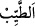

Hizmet isteği ve öte dünyaya gitme azmi
Unutma ki ağızdaki helâl lokmadan doğar
Râğıb der ki: “__WORD__in aslı, duyu organlarının ve nefsin lezzet aldığı şeydir. Şeriatta
tayyib yiyecek, câiz olan yerden, câiz olduğu kadar, yenilen şeydir. Ne zaman böyle
olursa dünyada da âhirette de tayyib/güzel/hoş olur ve hazmı zor olmaz. Aksi halde
dünyada hoş olsa da âhirette hoş olmaz. Bir hadiste “Allah tayyibdir, ancak
tayyib/temiz olanı kabul eder.”[84] buyrulmuştur.
Ravzatü’l-ahbâr sâhibi der ki:
Bir lokma şöyle demiştir: Aslında helâl olmazsa
O lokmadan insan ancak dalâlete düşer
Yağmurunun bir damlası saf ve temiz değilse
Senin denizinin incisi parlak değildir
Îsâ (a.s.) annesinin ip eğirip kazandığından yerdi. Peygamberimiz (a.s.)’ın rızkı ise
ganimetlerdendi ki o temiz rızıkların en temizidir.
Şeddâd’ın kız kardeşinden rivâyet edildiğine göre o, Rasûlullah (s.a.)’e sıcağın
şiddetli olduğu bir günde orucunu açarken bir bardak süt gönderdi. Efendimiz (s.a.):
“Bunu nereden buldun?” diye sordu ve geri çevirdi. Kadın: “Kendi koyunumdan.”
dedi. Rasûlullah (s.a.) yine geri çevirdi ve “Bu koyunu nereden buldun?”diye sordu.
Kadın: “Kendi malımla satın aldım.” dedi. Bunun üzerine sütü aldı. Sonra o kadın
Efendimiz’in yanına geldiğinde: “Yâ Rasûlallah neden o sütü geri çevirdiniz?” diye
sordu. Rasûlullah (s.a.): “Peygamberler ancak tayyib/temiz şeylerden yemek ve ancak
sâlih amel işlemekle emrolunmuşlardır.” buyurdu.[85]
İmam Gazzâlî (r.h.) der ki: “Bir insanın dışardan bakınca durumu iyi ve düzgün ise
onun hediyesini ve sadakasını kabul etmekte senin için bir sıkıntı yoktur. Zaman bozuldu
diye araştırman gerekmez. Çünkü böyle yapmak o müslümana kötü zan beslemek olur.
Halbuki müslümanlara hüsn-i zan etmek emredilmiştir.”
Ebû Süleyman Dârânî (r.h.) der ki: “Gündüz oruç tutup akşam helâl lokma ile iftar
etmem, gece kaim gündüz sâim olmamdan bana daha sevimlidir. Tevhid güneşinin,
midesinde haram lokma bulunan bir kalbe girmesi haramdır.”
Sonra temiz şeyleri yemeye her ne kadar ruhsat verildiyse de tabîatı şehvetlerden
kesmek için terk de edilir.
Ebü’l-Ferec İbnü’l-Cevzî der ki: “Kalbin mübahları düşünüp durması onda zulmet
meydana getirir. Haramı düşünüp planlamanın nasıl olacağını sen düşün! Misk, suyu
değiştirip onunla abdest almaya engel olursa, köpeğin yaladığı suyun hâlini sen düşün!
İşte bu yüzden büyüklerden biri şöyle der: “Mübahları işlemeyi âdet hâline getiren
münâcâtın lezzetinden mahrum olur.”